4 Hypothesis Tests
4.1 Introducing Hypothesis Tests
The 4-step outline
The following 4-step outline is a useful way to organize the ideas of hypothesis testing.
State the Null and Alternative Hypotheses
Compute the Test Statistic
The test statistic is a number that summarizes the evidence
Determine the p-value (from the Randomization Distribution)
Draw a conclusion
Null and Alternative Hypotheses
Figure 4.1
gf_point(ZPenYds ~ NFL_Malevolence, data = MalevolentUniformsNFL) %>%
gf_lm(ZPenYds ~ NFL_Malevolence, data = MalevolentUniformsNFL)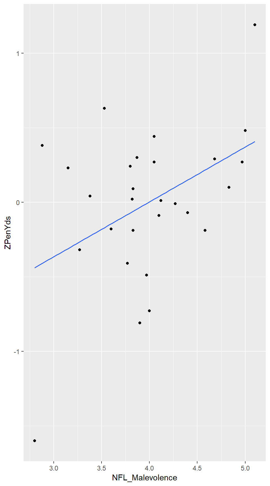
4.2 Measuring Evidence with P-values
Randomization distributions are a bit like bootstrap distributions except that instead of resampling from our sample (in an attempt to approximate resampling from the population), we need to sample from a situation in which our null hypothesis is true.
P-values from Randomization Distributions
Example 4.13
Testing one proportion.
\(H_0\): \(p = 0.5\)
\(H_a\): \(p > 0.5\)
Test statistic: \(\hat p = 16/25\) (the sample proportion)
We can simulate a world in which \(p = 0.5\) using
rflip():
Randomization.Match <-
do(10000) * rflip(25, .5) # 25 because n = 25
head(Randomization.Match)## n heads tails prop
## 1 25 15 10 0.60
## 2 25 12 13 0.48
## 3 25 15 10 0.60
## 4 25 11 14 0.44
## 5 25 7 18 0.28
## 6 25 11 14 0.44gf_histogram( ~ prop, binwidth = 0.04, data = Randomization.Match)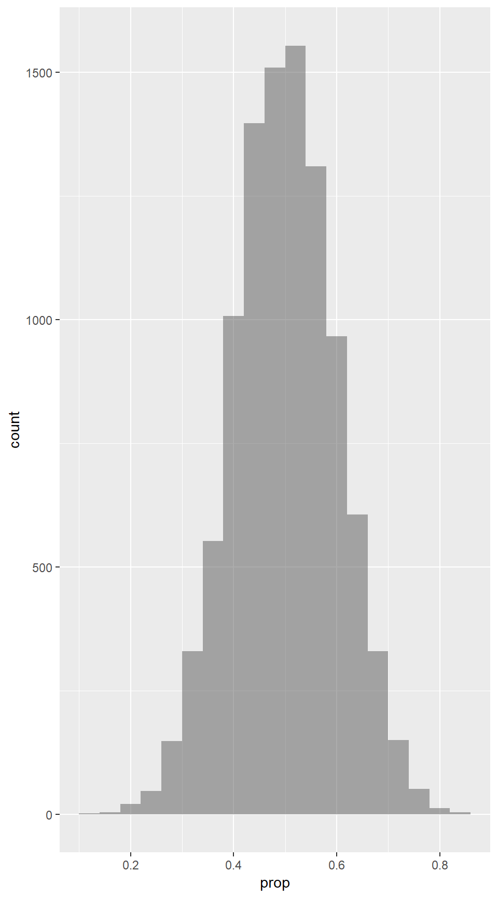
Here we find the proportion of the simulations which resulted in 16 or more matches out of 25, or 0.64 or greater, for the p-value.
prop( ~ (prop >= 0.64), data = Randomization.Match ) # 16/25## prop_TRUE
## 0.1152gf_histogram( ~ prop, binwidth = 0.04, fill = ~(prop >= 0.64),
data = Randomization.Match, show.legend = FALSE)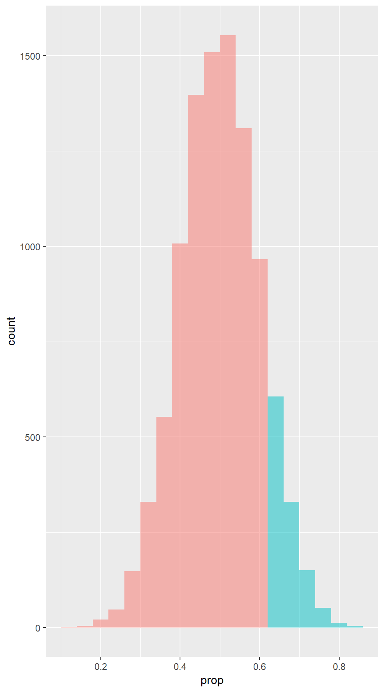
Example 4.15
prop( ~ (prop >= 0.60), data = Randomization.Match ) # 15/25## prop_TRUE
## 0.2118prop( ~ (prop >= 0.76), data = Randomization.Match ) # 19/25## prop_TRUE
## 0.0067gf_histogram( ~ prop, binwidth = 0.04, fill = ~(prop >= 0.60),
data = Randomization.Match, show.legend = FALSE )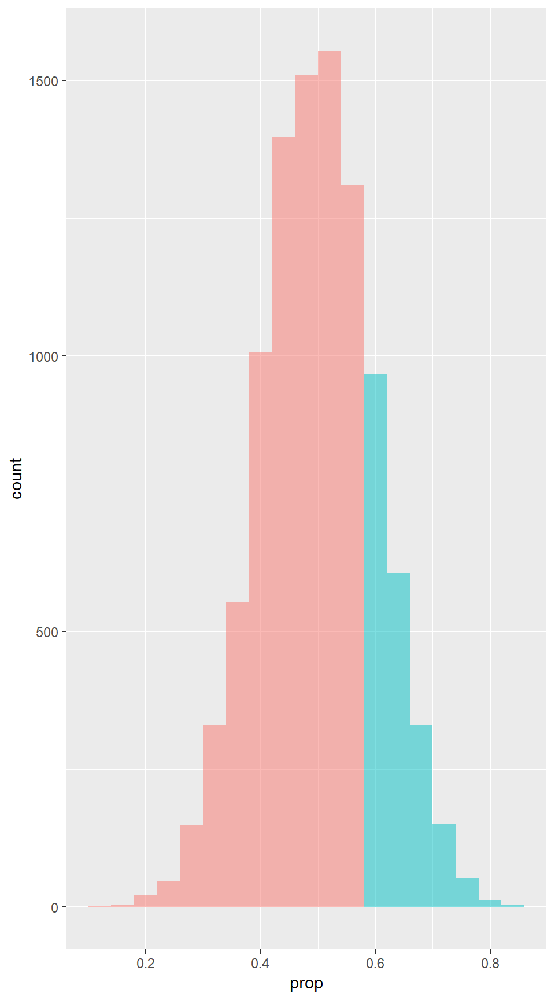
gf_histogram( ~ prop, binwidth = 0.04, fill = ~(prop >= 0.76),
data = Randomization.Match, show.legend = FALSE )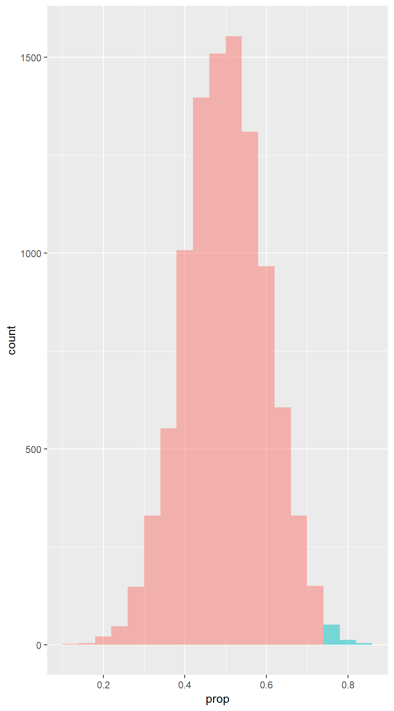
Example 4.16
prop( ~ (prop >= 0.88), data = Randomization.Match ) # 22/25## prop_TRUE
## 0gf_histogram(~ prop, binwidth = 0.04, data = Randomization.Match ) %>%
gf_vline(xintercept = .88)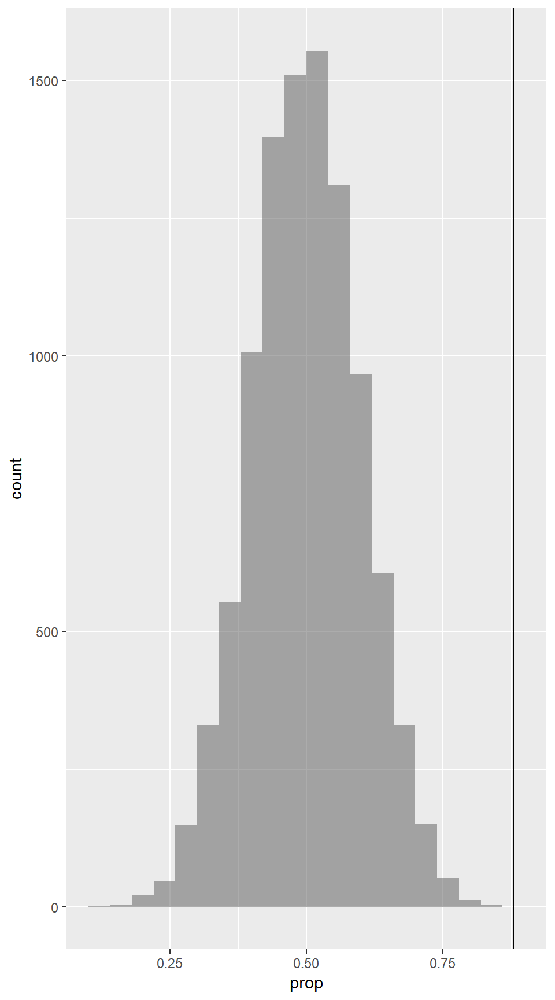
Figure 4.10
gf_dotplot(~ Taps, binwidth = 1, dotsize = .3, data = CaffeineTaps) %>%
gf_facet_grid(Group ~ .)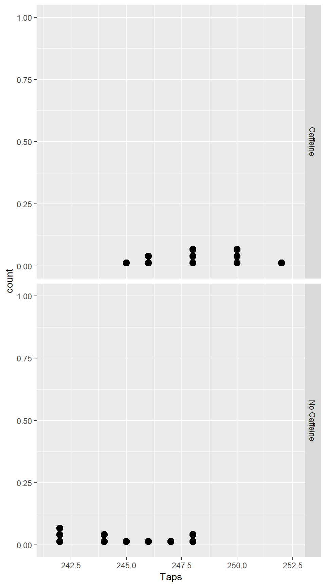
Example 4.18
Testing two means.
mean(Taps ~ Group, data = CaffeineTaps)## Caffeine No Caffeine
## 248.3 244.8diff( mean(Taps ~ Group, data = CaffeineTaps) )## No Caffeine
## -3.5\(H_0\): \(\mu_1 = \mu_2\)
\(H_a\): \(\mu_1 > \mu_2\)
Test statistic: \(\bar x_1 - \bar x_2 = 3.5\) (the difference in sample means)
We simulate a world in which \(\mu_1 = \mu_2\) or \(\mu_1 - \mu_2 = 0\):
Randomization.Caff <- do (1000) * ediff( mean( Taps ~ shuffle(Group), data = CaffeineTaps ) )
head(Randomization.Caff,3)## V1 No.Caffeine
## 1 NA 1.1
## 2 NA -0.1
## 3 NA 1.3gf_dotplot( ~ No.Caffeine, binwidth = 0.1, dotsize = .7, data = Randomization.Caff)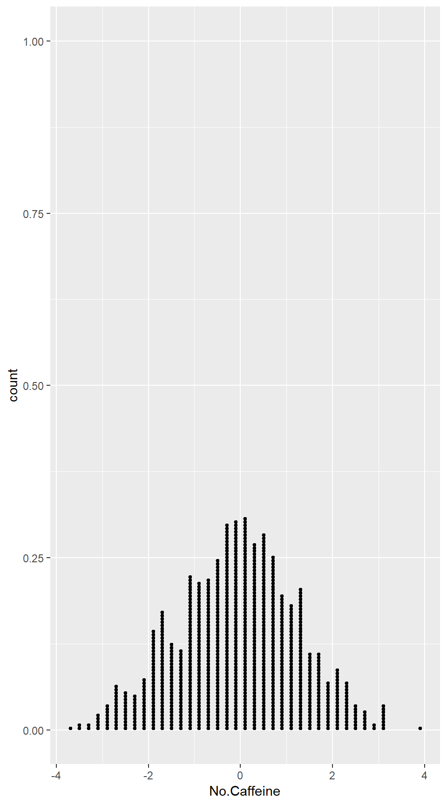
prop( ~ (No.Caffeine >= 3.5), data = Randomization.Caff )## prop_TRUE
## 0.001gf_dotplot( ~ No.Caffeine, binwidth = 0.1, dotsize = .6, colour = ~(No.Caffeine >=3.5),
data = Randomization.Caff, show.legend = FALSE)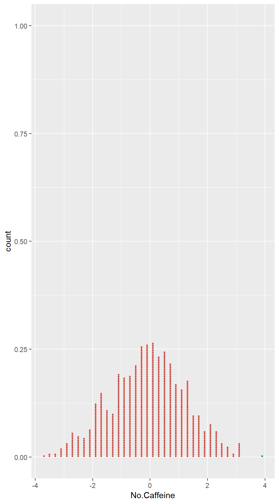
P-values and the Alternative Hypothesis
Example 4.19
Testing one proportion.
\(H_0\): \(p = 0.5\)
\(H_a\): \(p > 0.5\)
Test statistic: \(\hat p = 0.8, 0.6, 0.4\) (the sample proportion of 8/10, 6/10, 4/10 heads)
We simulate a world in which \(p = 0.5\):
RandomizationDist <- do(1000) * rflip(10, .5) # 10 because n = 10
head(RandomizationDist)## n heads tails prop
## 1 10 6 4 0.6
## 2 10 3 7 0.3
## 3 10 7 3 0.7
## 4 10 6 4 0.6
## 5 10 4 6 0.4
## 6 10 8 2 0.8gf_histogram( ~ prop, binwidth = 1/10, data = RandomizationDist)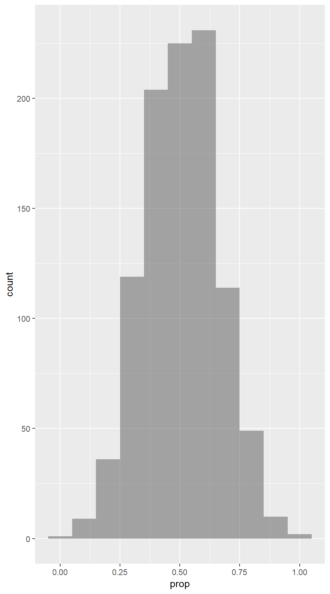
prop( ~ (prop >= 0.8), data = RandomizationDist )## prop_TRUE
## 0.072prop( ~ (prop >= 0.6), data = RandomizationDist )## prop_TRUE
## 0.391prop( ~ (prop >= 0.4), data = RandomizationDist )## prop_TRUE
## 0.846Example 4.20
Testing one proportion.
\(H_0\): \(p = 0.5\)
\(H_a\): \(p \neq 0.5\)
Test statistic: \(\hat p = 0.8\) (the sample proportion of 8/10 heads)
We use the simulated world in which \(p = 0.5\):
prop(~ (prop >= 0.8), data = RandomizationDist)## prop_TRUE
## 0.072prop(~ (prop <= 0.2), data = RandomizationDist)## prop_TRUE
## 0.047# a 2-sided p-value is the sum of the values above
prop(~ (prop <= 0.2 | prop >= 0.8), data = RandomizationDist)## prop_TRUE
## 0.119# We can also approximate the p-value by doubling one side
2 * prop(~ prop >= 0.80, data = RandomizationDist)## prop_TRUE
## 0.1444.3 Determining Statisical Significance
Less Formal Statistical Decisions
Example 4.27
Testing two means.
head(Smiles)## Leniency Group
## 1 7.0 smile
## 2 3.0 smile
## 3 6.0 smile
## 4 4.5 smile
## 5 3.5 smile
## 6 4.0 smilemean(Leniency ~ Group, data = Smiles)## neutral smile
## 4.117647 4.911765diffmean(Leniency ~ Group, data = Smiles)## diffmean
## 0.7941176\(H_0\): \(\mu_1 = \mu_2\)
\(H_a\): \(\mu_1 \neq \mu_2\)
Test statistic: \(\bar x_1 - \bar x_2 = 0.79\) (the difference in sample means)
We simulate a world in which \(\mu_1 = \mu_2\):
Randomization.Smiles <- do(1000) * diffmean(Leniency ~ shuffle(Group), data = Smiles)
head(Randomization.Smiles, 3)## diffmean
## 1 0.05882353
## 2 -0.52941176
## 3 0.17647059prop(~ (diffmean <= -0.79 | diffmean >= 0.79), data = Randomization.Smiles)## prop_TRUE
## 0.0492 * prop(~ diffmean >= 0.79, data = Randomization.Smiles )## prop_TRUE
## 0.052gf_dotplot(~ diffmean, binwidth = 0.03, dotsize = .7, colour = ~(diffmean >= 0.79),
xlab = "Diff", data = Randomization.Smiles, show.legend = FALSE)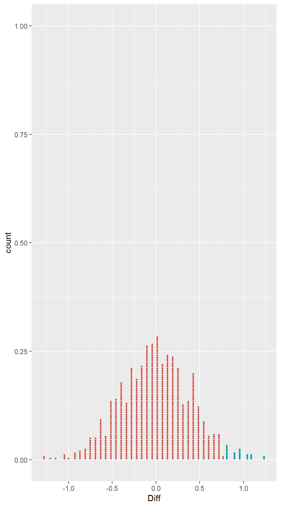
Now we find the p-value:
prop( ~ (diffmean <= -0.79 | diffmean >= 0.79), data = Randomization.Smiles)## prop_TRUE
## 0.0492 * prop( ~ diffmean >= 0.79, data = Randomization.Smiles )## prop_TRUE
## 0.052gf_dotplot( ~ diffmean, binwidth = .03, dotsize = .7, colour = ~(diffmean >= 0.79),
data = Randomization.Smiles, show.legend = FALSE)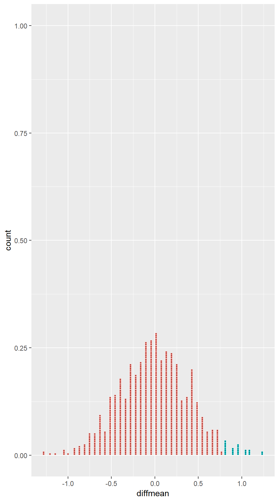
4.4 Creating Randomization Distributions
In order to use these methods to estimate a p-value, we must be able to generate a randomization distribution. In the case of a test with null hypothesis claiming that a proportion has a particular value (e.g, \(H_0\): \(p=0.5\)), this is pretty easy. If the population has proportion 0.50, we can simulate sampling from that proportion by flipping a fair coin. If the proportion is some value other than 0.50, we simply flip a coin that has the appropriate probability of resulting in heads. So the general template for creating such a randomization distribution is
do(1000) * rflip( n, hypothesized_proportion )where n is the size of the original sample.
In other situations, it can be more challenging to create a randomization distribution because the null hypothesis does not directly specify all of the information needed to simulate samples.
\(H_0\): \(p_1 = p_2\)
This would be simple if we new the value of \(p_1\) and \(p_2\) (we could use
rflip()twice, once for each group),\(H_0\): \(\mu\) = some number
Just knowing the mean does not tell us enough about the distribution. We need to know about its shape. (We might need to know the standard deviation, for example, or whether the distribution is skewed.)
\(H_0\): \(\mu_1 \neq \mu_2\) some number.
Now we don’t know the common mean and we don’t know the things mentioned in the previous example either.
So how do we come up with randomization distribution?
The main criteria to consider when creating randomization samples for a statistical test are:
Be consistent with the null hypothesis.
If we don’t do this, we won’t be testing our null hypothesis.
Use the data in the original sample.
With luck, the original data will shed light on some aspects of the distribution that are not determined by null hypothesis.
Reflect the way the original data were collected.
Randomization Test for a Difference in Proportions: Cocaine Addiction
Data 4.7
Data 4.7 in the text describes some data that are not in a data frame. This often happens when a data set has only categorical variables because a simple table completely describes the distributions involved. Here’s the table from the book:4
| Relapse | No Relapse | |
|---|---|---|
| Lithium | 18 | 6 |
| Placebo | 20 | 4 |
Here’s one way to create the data in R
Cocaine <- rbind(
do(18) * data.frame( treatment = "Lithium", response = "Relapse"),
do(6) * data.frame( treatment = "Lithium", response = "No Relapse"),
do(20) * data.frame( treatment = "Placebo", response = "Relapse"),
do(4) * data.frame( treatment = "Placebo", response = "No Relapse")
)Example 4.29
Testing two proportions.
tally( response ~ treatment, data = Cocaine )## treatment
## response Lithium Placebo
## Relapse 18 20
## No Relapse 6 4prop( response ~ treatment, data = Cocaine )## prop_Relapse.Lithium prop_Relapse.Placebo
## 0.7500000 0.8333333diff( prop( response ~ treatment, data = Cocaine ))## prop_Relapse.Placebo
## 0.08333333\(H_0\): \(p_1 = p_2\)
\(H_a\): \(p_1 < p_2\)
Test statistic: \(\hat p_1 = \hat p_2\) (the difference in sample proportions)
We simulate a world in which \(p_1 = p_2\) or \(p_1 - p_2 = 0\):
Randomization.Coc <- do (5000) * diff( prop( response ~ shuffle(treatment), data = Cocaine ) )
head(Randomization.Coc)## prop_Relapse.Placebo
## 1 0.16666667
## 2 0.08333333
## 3 -0.16666667
## 4 -0.08333333
## 5 0.08333333
## 6 -0.08333333Randomization Test for a Correlation: Malevolent Uniforms and Penalties
Example 4.31
Testing correlation.
gf_point(ZPenYds ~ NFL_Malevolence, data = MalevolentUniformsNFL) %>%
gf_lm(ZPenYds ~ NFL_Malevolence, data = MalevolentUniformsNFL)cor(ZPenYds ~ NFL_Malevolence, data = MalevolentUniformsNFL)## [1] 0.429796\(H_0\): \(\rho = 0\)
\(H_a\): \(\rho > 0\)
Test statistic: \(r = 0.43\) (the sample correlation)
We simulate a world in which \(\rho = 0\):
Randomization.Mal <-
do(10000) * cor(NFL_Malevolence ~ shuffle(ZPenYds), data = MalevolentUniformsNFL)
head(Randomization.Mal)## cor
## 1 -0.13541976
## 2 0.10549967
## 3 0.10137539
## 4 0.33179991
## 5 -0.06182464
## 6 -0.17591371prop( ~ (cor > 0.43 ), data = Randomization.Mal )## prop_TRUE
## 0.0112gf_histogram(~ cor, binwidth = 0.05, data = Randomization.Mal) %>%
gf_vline(xintercept = .43)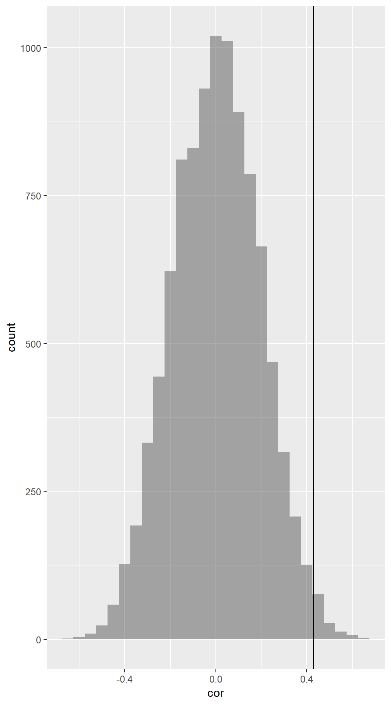
Randomization Test for a Mean: Body Temperature
Example 4.33
Testing one mean.
mean( ~ BodyTemp, data = BodyTemp50)## [1] 98.26gf_dotplot(~ BodyTemp, binwidth = .1, stackratio = 2, dotsize = 1,
data = BodyTemp50) %>% gf_vline(xintercept = 98.26)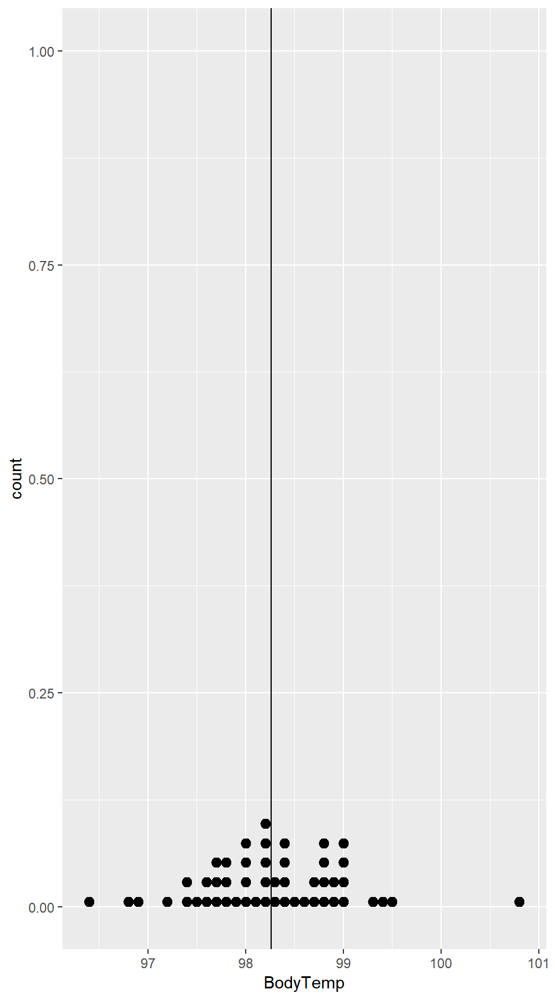
\(H_0\): \(\mu = 98.6\)
\(H_a\): \(\mu \neq 98.6\)
Test statistic: \(\bar x = 98.26\) (the sample mean)
Notice that the test statistic differs a bit from 98.6
98.6 - mean( ~ BodyTemp, data = BodyTemp50) ## [1] 0.34But might this just be random variation? We need a randomization distribution to compare against.
- If we resample, the mean will not be 98.6. But we shift the distribution a bit, then we will have the desired mean while preserving the shape of the distribution indicated by our sample. We simulate a world in which \(\mu = 98.6\):
Randomization.Temp <-
do(10000) * ( mean( ~ BodyTemp, data = resample(BodyTemp50) ) + 0.34 )
head(Randomization.Temp, 3)## result
## 1 98.708
## 2 98.590
## 3 98.716mean( ~ result, data = Randomization.Temp )## [1] 98.59943cdata( ~ result, 0.95, data = Randomization.Temp )## low hi central.p
## 98.392 98.814 0.950From this we can estimate the p-value:
prop( ~ abs(result - 98.6) > 0.34, data = Randomization.Temp)## prop_TRUE
## 0.0023gf_histogram( ~ result, binwidth = .01, data = Randomization.Temp) %>%
gf_vline(xintercept = 98.4) %>%
gf_vline(xintercept = 98.6) %>%
gf_vline(xintercept = 98.81)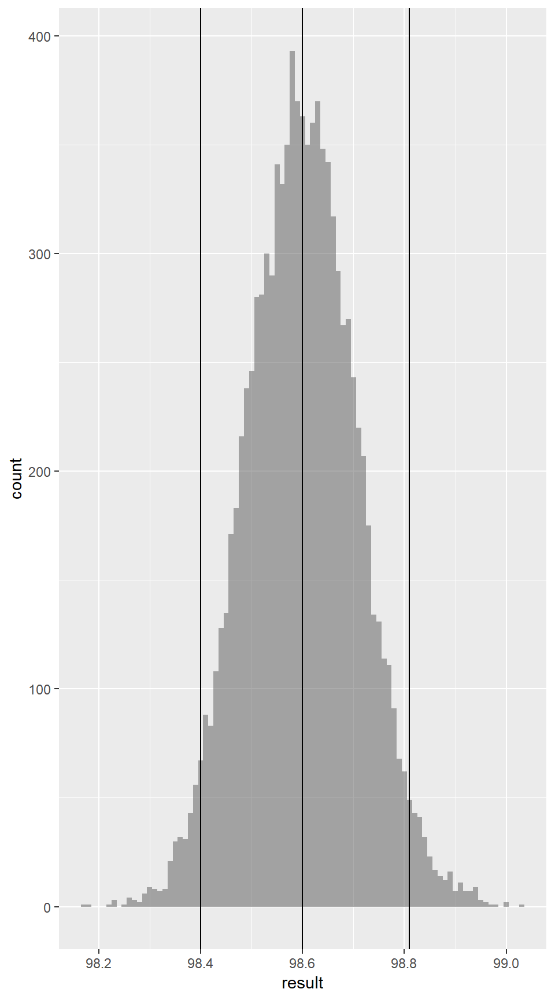
How do we interpret this (estimated) p-value of 0? Is it impossible to have a sample mean so
far from 98.6 if the true population mean is 98.6? No. This merely means that we didn’t see any
such cases in our 10000 randomization samples.
We might estimate the p-value as \(p < 0.001\). Generally, to more accurately estimate small p-values, we must use many more randomization samples.
Example 4.33: A different approach
An equivalent way to do the preceding test is based on a different way of expressing our hypotheses.
\(H_0\): \(\mu - 98.6 = 0\)
\(H_a\): \(\mu - 98.6 \neq 0\)
Test statistic: \(\bar x - 98.6 = -0.34\)
We we create a randomization distribution centered at \(\mu - 98.6 = 0\):
Randomization.Temp2 <-
do(5000) * ( mean( ~ BodyTemp, data = resample(BodyTemp50) ) - 98.26 )
head(Randomization.Temp2, 3)## result
## 1 -0.190
## 2 0.060
## 3 0.172mean( ~ result, data = Randomization.Temp2 )## [1] -0.0008952From this we can estimate the p-value:
prop( ~ abs(result) > 0.34, data = Randomization.Temp2 )## prop_TRUE
## 0.0016gf_histogram( ~ result, binwidth = .01, data = Randomization.Temp2) %>%
gf_vline(xintercept = .34) %>%
gf_vline(xintercept = -.34)
Often there are multiple ways to express the same hypothesis test.
4.5 Confidence Intervals and Hypothesis Tests
If your randomization distribution is centered at the wrong value, then it isn’t simulating a world in which the null hypothesis is true. This would happen, for example, if we got confused about randomization vs. bootstrapping.
Randomization and Bootstrap Distributions
Figure 4.32
Boot.Temp <- do (5000) * mean(~ BodyTemp, data = resample(BodyTemp50))
head(Boot.Temp,3)## mean
## 1 98.148
## 2 98.258
## 3 98.362mean(~ mean, data = Boot.Temp)## [1] 98.25733cdata( ~ mean, 0.95, data = Boot.Temp)## low hi central.p
## 98.052 98.472 0.950gf_histogram( ~ mean, binwidth = .01, v = c(98.26, 98.6),
fill = ~(98.05 <= mean & mean <= 98.46), data = Boot.Temp, show.legend = FALSE) %>%
gf_vline(xintercept = 98.26) %>%
gf_vline(xintercept = 98.6)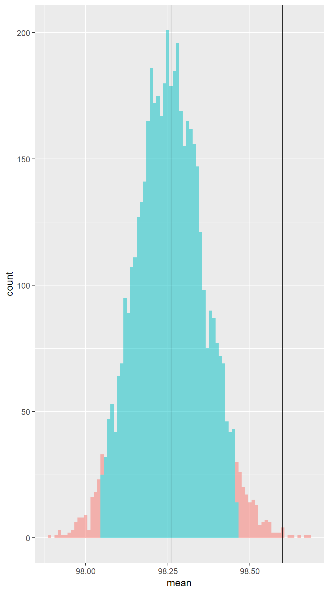
Notice that the distribution is now centered at our test statistic instead of at the value from the null hypothesis.
Example 4.35
\(H_0\): \(\mu = 98.4\)
\(H_a\): \(\mu \neq 98.4\)
Test statistic: \(\bar x = 98.26\) (the sample mean)
We simulate a world in which \(\mu = 98.4\):
Randomization.Temp3 <-
do(5000) * ( mean( ~ BodyTemp, data = resample(BodyTemp50) ) + 0.14 )
head(Randomization.Temp3, 3)## result
## 1 98.592
## 2 98.376
## 3 98.464mean( ~ result, data = Randomization.Temp3 )## [1] 98.39952cdata(~ result, 0.95, data = Randomization.Temp3)## low hi central.p
## 98.190 98.612 0.950gf_histogram( ~ result, binwidth = .01,fill = ~(98.19 <= result & result <= 98.62),
xlim = c(97.8, 99.0), data = Randomization.Temp3, show.legend = FALSE) %>%
gf_vline(xintercept = 98.26) %>%
gf_vline(xintercept = 98.4)# randomization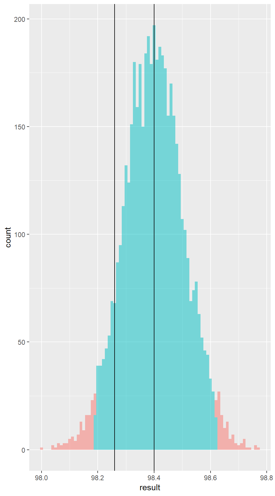
gf_histogram( ~ mean, binwidth = .01, fill = ~(98.05 <= mean & mean <= 98.46),
xlim = c(97.8, 99.0), data = Boot.Temp, show.legend = FALSE) %>%
gf_vline(xintercept = 98.26) %>%
gf_vline(xintercept = 98.4)# bootstrap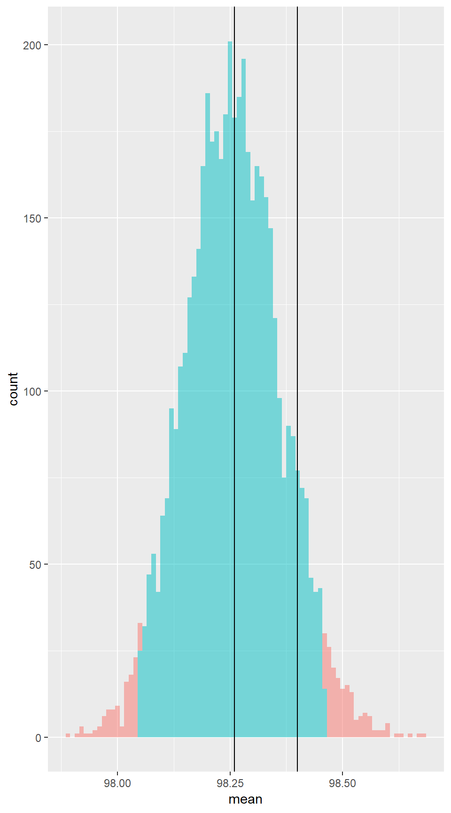
The book includes data on an additional treatment group which we are omitting here.↩